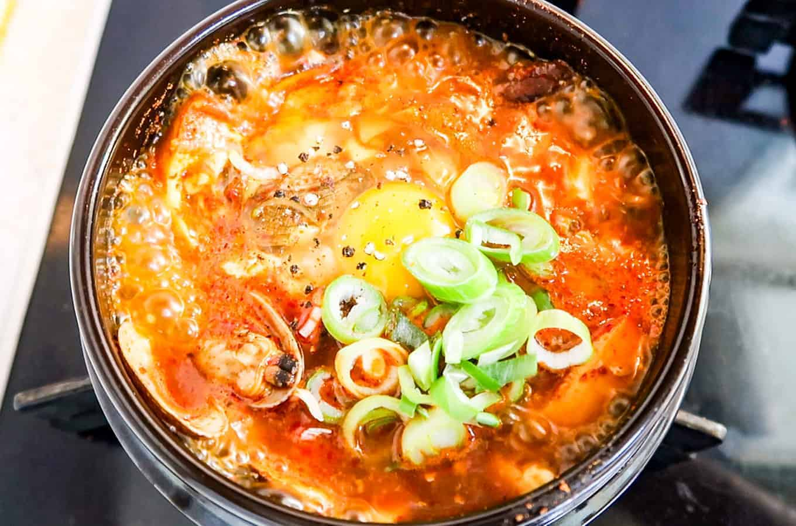

Soon Doo Boo Jjigae

Soon doo boo is a hearty soft tofu stew, usually with kimchi and seaweed or pork.
Ingredients
Main
- 350g Soft tofu
- 110g littleneck clams or pipis, cleaned
- 3-4 banana prawns, head, shells and guts removed
- 100g enoki mushrooms, bottom 4-5 cm stem removed and rinsed briefly in cold running water
- 2 small shiitake mushrooms (20g), cleaned, stem removed and thinly sliced
- 1 egg
- 1 stalk of green onion (10g), thinly sliced
Soup base
- 1.5 cups dried kelp and anchovy stock
- 1 Tbsp Korean chili oil or neutral cooking oil
- 2 Tbsp Korean chili powder or Korean chili flakes (gochugaru)
- 1 tsp minced garlic
- 1/2 Tbsp Korean fish sauce
- 1/2 Tbsp Korean soup soy sauce or regular kikkoman soy sauce fine sea salt, to taste
- A few sprinkles of ground black pepper
- A dash (about 1/2 tsp) of sesame oil
Steps
- Start heating the pot on the stove over medium low heat and add the chili oil, chili powder, and garlic. Stir them well for about 1 min. Make sure not to burn the chili powder.
- Add the clams and shrimps and stir quickly to coat them with the chili sauce. Add the fish sauce and soy sauce then stir.
- Add the dried kelp and anchovy stock and boil it on medium-high heat until it starts to boil rapidly (2 to 3 mins).
- Add the tofu, mushrooms, and egg and cook them for another 2 to 3 mins. Season with salt, if required.
- Top up with the green onion, black pepper and sesame oil. Serve hot with Korean rice and side dishes (banchan).
- Serve immediately!
Go Home